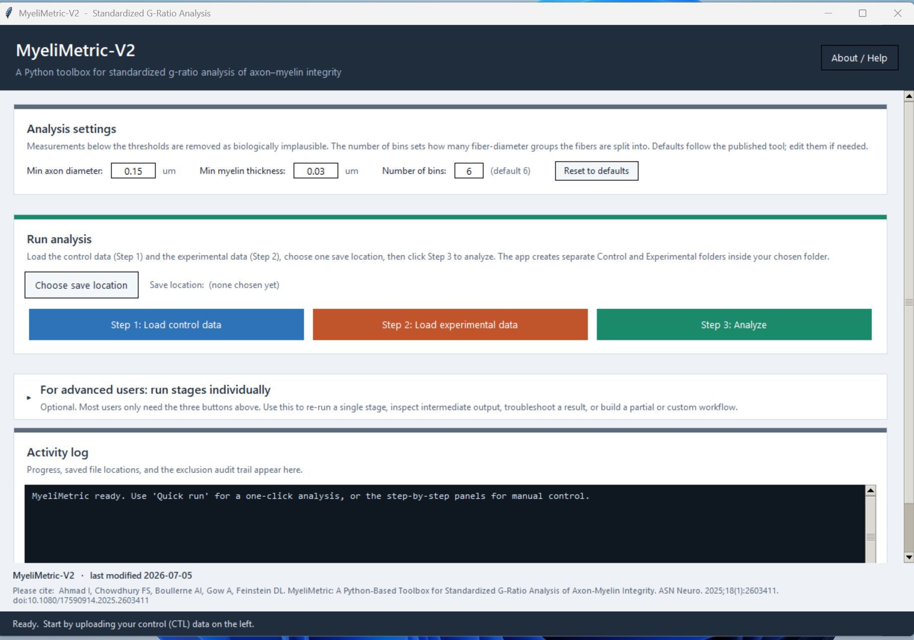

Standardized g-ratio analysis, now easier to run and share.
MyeliMetric-V2 is a standalone Windows application for biologically informed g-ratio analysis from post-segmented axon and myelin measurements. Load control and experimental data, choose one save location, and run the full workflow from a clear graphical interface.

From paired measurements to organized, interpretable outputs.
MyeliMetric calculates fiber diameter and g-ratio, applies biologically motivated exclusion thresholds, groups fibers by caliber, generates statistics and figures, and preserves control-derived bin ranges for experimental comparisons.
Standardized preprocessing
Use paired _Ax and _My columns, with transparent thresholds and an exclusion audit.
Fiber-caliber aware
Evaluate g-ratio within diameter subsets instead of relying only on a single pooled relationship.
Reproducible outputs
Save cleaned data, subsets, statistics, scatter plots, histograms, normality figures, run logs, and a CTL-versus-EXP summary.
Three actions for the standard analysis.
Load control
Select the CTL Excel or CSV file. Control data define the reference fiber-diameter ranges.
Load experimental
Select the EXP file. The application keeps it ready without processing until Analyze is selected.
Analyze
Choose one save location and run the complete pipeline. Organized folders are created automatically.
A more practical workflow without abandoning the validated analysis.
V2 focuses on usability, traceability, flexible settings, and distribution. The numerical g-ratio definition and core statistical outputs remain aligned with the published tool, while the fiber-diameter reference ranges now use all control animals pooled together rather than depending on the first control animal.
Standalone Windows application
Colleagues can run the finished app without installing Python or a scientific package stack.
One save location
Control, Experimental, and Summary folders are created automatically, reducing misplaced results.
Adjustable but reproducible
Bin number and exclusion thresholds are editable, while published defaults remain visible and easy to restore.
Example results generated by the application.
These figures come from the supplied example CTL and EXP files and show the kinds of outputs MyeliMetric creates.


Download MyeliMetric-V2 for Windows.
The website points to the latest GitHub Release so the download button can stay current as the standalone build is updated. The user manual and example data are available separately.